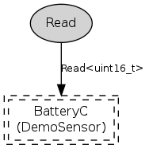

DemoSensorC is a generic sensor device that provides a 16-bit value. The platform author chooses which sensor actually sits behind DemoSensorC, and though it's probably Voltage, Light, or Temperature, there are no guarantees. This particular DemoSensorC on the z1 platform provides a voltage reading using BatteryC, * or * a temperature reading using the TMP102 sensor. Works with Oscilloscope.
